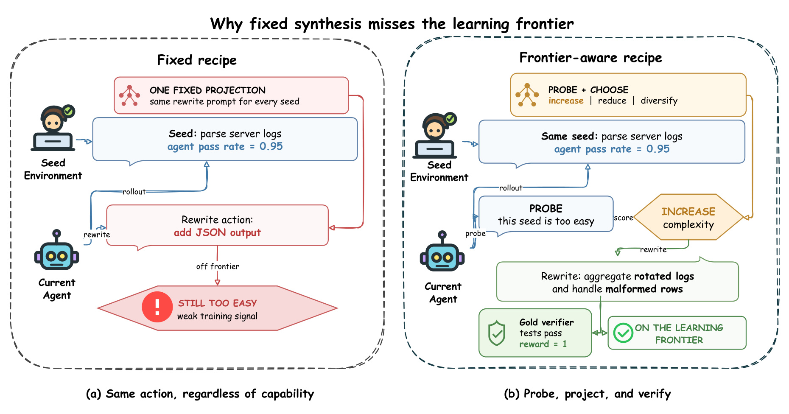
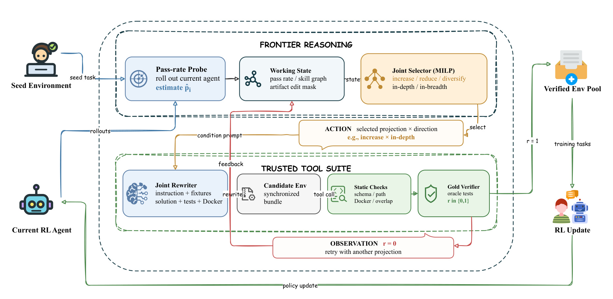
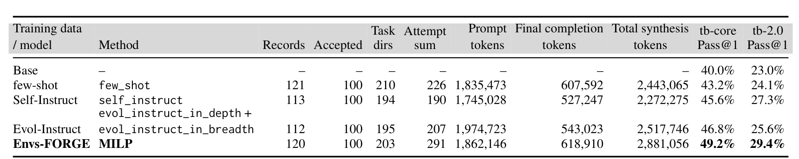
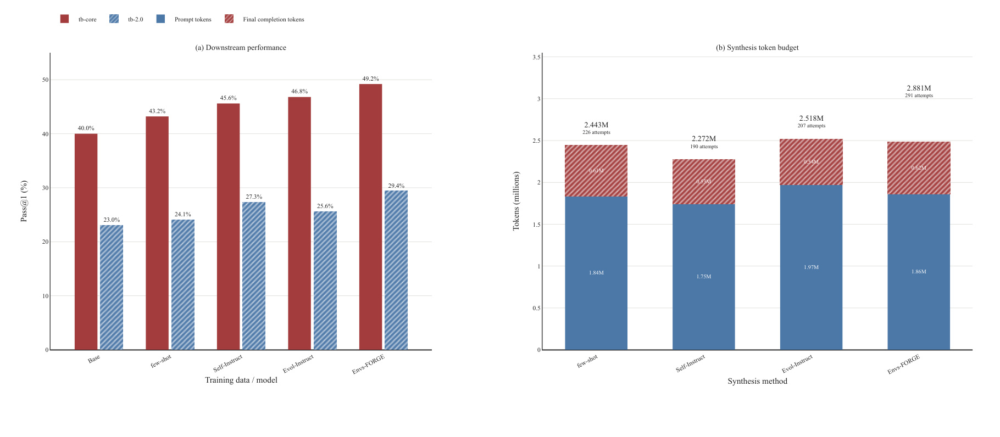
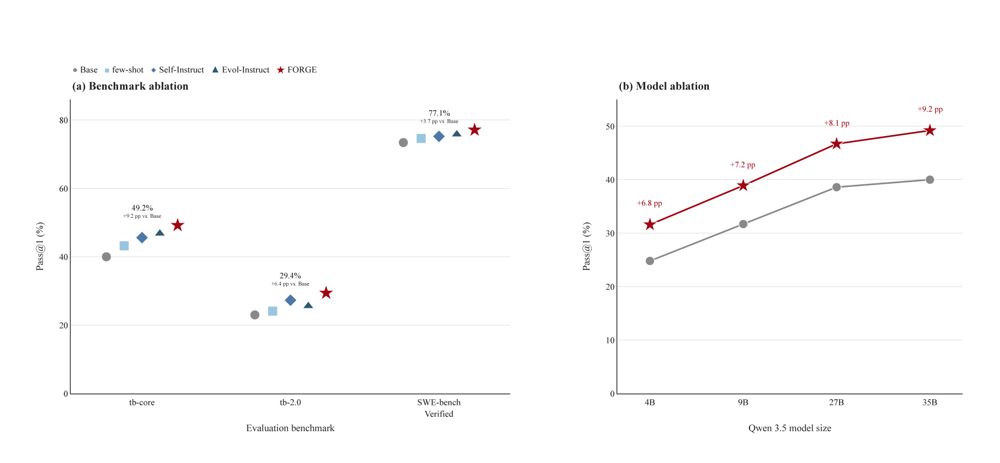
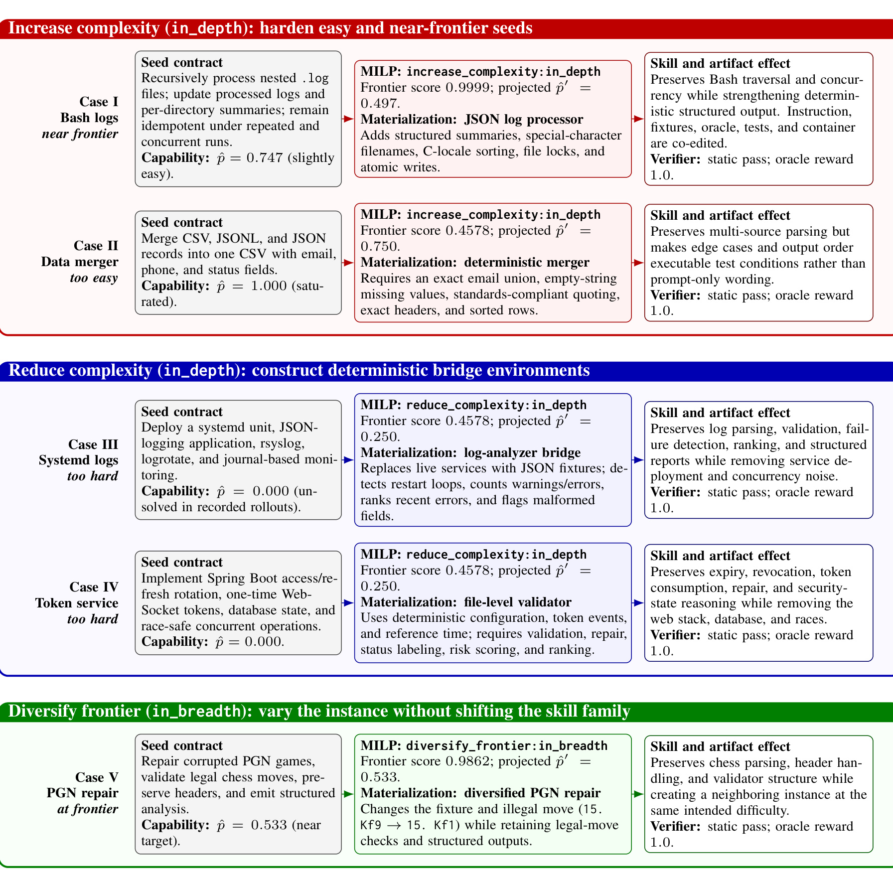

Envs-FORGE：面向 Agent 强化学习的前沿优化、奖励锚定环境合成
Envs-FORGE 研究的是终端 Agent 强化学习中的训练环境合成策略：面对一个已有的可执行 seed，不再让大模型机械套用固定改写配方，而是先用当前策略的 verifier rewards 估计这个 seed 对 Agent 来说有多难，再决定把它增难、减难，还是在相近难度下多样化。论文第一作者 Xiaojun Wu 的主要机构是 IDEA Research，合作机构包括香港科技大学（广州）与 DataArcTech Ltd.；论文于 2026 年 8 月 14 日以 arXiv v1 公开，入口为 Envs-FORGE: Frontier-Optimized Reward-Grounded Environment Synthesis for Agent RL。论文给出的代码入口已核验为 DataArc-SynData-Toolkit，但论文特定实验配置、数据记录与完整复现实例是否全部落入仓库，仍需逐项对照。
终端 Agent 的强化学习既需要奖励可信、可以真正执行的训练环境，也需要环境难度与当前策略相匹配；固定合成配方对每个 seed 使用同一种改写策略，无法按策略能力决定任务应变难、变易，还是保持难度而只改变实例。
1. 背景和问题
1.1 训练样本不是一句指令，而是一套能跑通的环境
对普通指令微调而言，一条样本常可抽象成输入与目标输出；终端 Agent 的 RL 样本更像一个小型软件系统。论文把第 (i) 个 seed 写成 (s_i=(I_i,D_i,S_i,T_i,E_i))：(I_i) 是用户看到的 instruction，(D_i) 是 fixture 与数据文件，(S_i) 是 oracle solution，(T_i) 是测试与奖励逻辑，(E_i) 是 Docker 可执行环境。五者彼此耦合。若只给 instruction 增加“还要处理畸形 JSON”这一要求，却没有同步加入畸形 fixture、改写 oracle、扩充 tests，并确认容器内依赖可用，生成结果可能语言上更复杂，实际上却不可评分、不可执行，甚至让 verifier 奖励与任务文字互相矛盾。
因此，环境合成至少面对两条正交轴线。第一条是内部一致性：任务描述、输入文件、正确解、测试、运行环境是否共同定义了同一个任务；第二条是策略相对难度：这个一致的任务对当前 Agent 是否仍有学习信号。gold verifier 可以回答“oracle 能否在生成环境中得到 reward 1”，却不能回答当前策略是否已经接近百分之百通过。反过来，当前策略在某个 seed 上失败，也不能证明 seed 是优质难例：它可能只是 Docker 构建坏了、隐藏约束未写进 instruction，或测试本身不稳定。Envs-FORGE 的问题设定有价值，正因为它没有把这两条轴混成一个“生成更复杂任务”的模糊目标。
论文聚焦 terminal-agent 和软件工程式任务。SWE-agent、OpenHands 提供与命令行环境交互的执行回路，Terminal-Bench 与 SWE-bench Verified 提供容器化任务或仓库修复评测；而训练端仍需要持续构造可执行环境。既有 CLI-Gym、SkillSynth、TermiGen、TerminalTraj、Endless Terminals、Agent-World 等工作分别增强 runtime inversion、技能图采样、错误注入、仓库构造、程序化生成或能力缺口发现。本文并不替代这些“合成底座”，而是追问一个更上游的策略问题：在底层生成器和 verifier 保持一致时，LLM 到底应该对每个 seed 执行哪种变换？
1.2 固定合成配方为什么会错过学习前沿
few-shot、Self-Instruct 与 Evol-Instruct 都能扩展训练数据，但它们把变换方向预先写进 prompt。few-shot 倾向保留 seed 结构，Self-Instruct 倾向发明同域任务，Evol-Instruct 固定做纵向加深或横向扩展。问题不在这些动作本身无效，而在于同一个动作对不同能力区间的 seed 价值不同：当前策略对 seed 的通过率若已达 0.95，继续生成轻微近邻很可能仍然过易；若通过率接近 0，把基础设施和业务逻辑同时加复杂只会扩大不可学习区；若通过率已在 0.5 左右，贸然减难又会浪费已有的有效边界样本。

Figure 1 左侧把失败模式画得很具体：固定 recipe 面对“解析服务器日志、当前 Agent 通过率 0.95”的 seed，仍只执行预设的“增加 JSON 输出”，结果生成任务继续远离有效前沿，训练信号偏弱。右侧不是单纯把任务加难，而是先 probe 当前 Agent，识别 seed 过易，再选择 increase，并在改写后用 gold verifier 检查测试和奖励。图里的 “ON THE LEARNING FRONTIER” 应理解为由启发式预计通过率定义的目标，而不是对真实训练增益的逐样本保证；真正的下游证据仍来自统一 RL 协议后的 Pass@1。
这张图也揭示作者选择目标通过率 0.5 的直觉：太容易的任务几乎没有失败轨迹，太难的任务几乎没有成功信号；靠近中间区域的环境更可能让策略同时观察成功与失败。但“中间难度最好”在本文中是建模先验，不是逐任务做过因果验证的定律。论文用固定 transfer prior 预测动作后的通过率，再用实验比较整套 prompting policy，尚未展示对每个合成环境重新 rollout 后，预计通过率与真实通过率的校准曲线。这会成为理解结果边界时的重要保留项。
1.3 研究问题被拆成选择与物化两步
Envs-FORGE 把固定 recipe 合并在一次 prompt 里的决定拆开。第一步只决定 seed 相对当前策略应向哪里移动：increase 给过易任务增加可执行约束，reduce 把过难任务化成保留核心技能的 bridge task，diversify 在接近前沿时改变 fixture 或邻近要求；每种投影再搭配 in-depth 或 in-breadth 方向，形成六个候选。第二步才让合成模型按选中合同同步改写五类 artifact，并通过静态检查和 oracle tests。这样做的关键不是“用了 MILP”这一形式，而是把难度动作、技能保留、artifact 一致性与最终接纳条件显式化，让选择记录可以审计。
论文的贡献也应按这一边界理解。它比较的是共享合成与验证流水线中的 prompting policy，而不是证明 MILP 比所有环境生成系统都强；它用动作掩码把 fixed baselines 放进近似共享语义空间，但作者明确指出这些 correspondence 不是生成过程的严格等价；它报告每种合成方法最终都给 RL 导出 100 个 gold-verified 环境，从而避免把“生成更多训练任务”误当成算法优势。这样，性能差异更接近“如何为 seed 选动作”的差异，不过仍然是整套 pipeline 的结果，不能自动归因到目标函数中的某一个项。
从推荐系统视角看，这个问题与 curriculum、hard-negative mining 和在线难例采样有相似结构：样本价值依赖当前模型状态，而非只依赖样本自身复杂度。但这里的 action 不只是选已有样本，还会生成一个新的可执行任务 bundle；一次变换必须同时维护 instruction、数据、正确解与判定器。这使 Envs-FORGE 比传统难例采样多了一层“标签与环境一起改写”的一致性风险，也让 verifier 成为训练数据定义的一部分，而不是训练结束后的附加评估。
2. 方法
2.1 从可执行 seed 到六种投影—方向候选
方法从当前 RL Agent 对 seed 的 rollout 开始。每次 rollout 得到 (r_{i,t}\in[0,1]) 的 verifier reward；二值奖励时就是成功或失败，若 verifier 支持部分奖励则按比例计入。系统先估计 seed 的通过率，再围绕 projection 集合 (\mathcal A={\mathrm{increase},\mathrm{reduce},\mathrm{diversify}}) 与 direction 集合 (\mathcal D={\mathrm{in_depth},\mathrm{in_breadth}}) 构造六个候选。估计在候选构造之前完成，并在这次优化中固定，因此求解器看到的是常数分数与元数据，不会在 MILP 内模拟 LLM 生成。

Figure 2 顶部的 FRONTIER REASONING 是选择层：pass-rate probe 从当前 Agent rollout 读取能力信号，working state 保存通过率、skill graph 和 artifact edit mask，MILP 联合选择投影与方向。底部 TRUSTED TOOL SUITE 是物化与验证层：joint rewriter 同步修改 instruction、fixtures、solution、tests、Docker，随后经过 schema、路径、容器与 overlap 静态检查，再执行 oracle tests。reward 1 才进入 Verified Env Pool；reward 0 会回到另一投影的重试路径。最外圈的 policy update 表明已验证环境用于 RL 后，Agent 状态会变化，下一轮 seed 难度也应重新估计。这个闭环说明 FORGE 是训练数据构造器，不是部署推理阶段给 Agent 增加的模块。
符号解释：(\hat p_i) 是当前策略对 seed (i) 的经验通过率，(n_i) 是记录的 rollout 数，(r_{i,t}) 是第 (t) 次执行的 verifier reward。它把模型能力压缩成一个标量，因此能直接驱动难度投影；代价是同一均值可能来自不同不确定性，例如两次全成功与二十次全成功都给出 1.0，却未被置信区间区分。部分奖励若不同任务口径不一致，也会影响跨 seed 可比性。
符号解释：(a) 是 increase、reduce 或 diversify，(d) 是 in-depth 或 in-breadth；(\Delta_{\mathrm{increase}}=-0.25)、(\Delta_{\mathrm{reduce}}=0.25)、(\Delta_{\mathrm{diversify}}=0)，而 (\gamma_{\mathrm{in_depth}}=1)、(\gamma_{\mathrm{in_breadth}}=0.65)。increase 预计降低通过率，reduce 预计提高通过率，breadth 的变化幅度被衰减。clip 把结果截到 ([0,1])。作者明确说这些是候选排序先验，不是声称每次物化都会精确移动相同幅度。
符号解释：(F_{i,a,d}) 是候选的前沿效用，(\tau) 是目标通过率，(\sigma) 决定离开 0.5 后效用下降的速度。高斯形状让 0.5 附近得分最高，过易与过难都被降权。该设计把 curriculum 目标写成可审计数值，但 (\tau,\sigma,\Delta,\gamma) 都是人工设定；论文没有给 transfer-prior sensitivity，因而不能判断性能来自“前沿思想”还是恰好适配当前 seed pool 的参数。
Table 4 给出了生成模型真正需要遵守的合同。increase 可增加一到两个约束、边界条件、更大 fixture 或更严格的确定性输出，但必须保留核心技能并同步更新解和测试；reduce 可去掉次要系统或把脆弱基础设施替换成小型 bridge task，却不能把任务简化成无关问题；diversify 改 fixture、场景或邻近要求，同时保持近似难度并同步 expected outputs 与 verifier logic。下半表把 few-shot 近似为 diversify×in-depth，把 Self-Instruct 近似为 diversify×in-breadth，Evol-Instruct depth/breadth 分别固定方向。这里“近似”很重要：共享动作空间方便解释比较，却不意味着 baseline prompt 与 FORGE 候选生成完全相同。
2.2 逐 seed MILP：动作选择、技能约束与基线掩码
每个 seed 的核心优化单元只有六个候选。候选带有必需技能集合 (R_{i,a,d})、可选增删技能集合 (O_{i,a,d})，以及 eligibility、prompt length、split membership、known overlap 等预计算常数。求解器引入二元变量 (x_{i,a,d}) 选择动作，用 (u_{i,a,d,v}) 表示技能节点 (v) 是否随该候选激活；当启用 portfolio coverage 时，再用连续变量 (\xi_v) 表示目标技能覆盖的短缺。论文报告的主运行不是一次跨 100 个 seed 的复杂组合分配，而是每个 seed 单独求一个六动作 MILP，再把 100 个局部决定序列化进 indexed 形式。
符号解释：第一项最大化候选靠近学习前沿的效用；第二项以 (\epsilon=10^{-6}) 轻微惩罚无必要的可选技能激活，避免同分时任意扩张；第三项以 (\lambda=0.25) 惩罚目标覆盖短缺。由于 (F)、技能集合与候选元数据都在求解前计算，目标对变量保持线性。目标值只是选取问题的 solver audit quantity，不能和 RL 训练后的 Pass@1 混为一谈。
符号解释：第一式限制每个 seed 至多选一个动作，第二式规定 indexed 形式总共选择 (N) 个 seed-action 实例。报告运行中 (N=|S|=100)，所以每个 seed 实际选择一个动作，最终仍导出 100 个环境。若未来令 (N<|S|)，portfolio 模式才会同时承担跨 seed 分配预算的职责；这一扩展在本文主实验中没有性能结果。
符号解释：必需技能随动作一同激活，可选技能只能在动作被选中时激活，合同之外的技能固定为零。技能节点来自 domain、tool、artifact、operation、constraint 等 taxonomy，例如 system_admin、docker、logs、parse、atomicity；FORGE 还能附加 edge_cases、structured_output、deterministic_sorting 等节点。它们是 prompt 合同元数据，不是新生成的独立 artifact，也不能单独保证语义正确。
符号解释：(m_v) 是技能节点 (v) 的目标覆盖，(\xi_v) 允许有界短缺，报告运行中 (\bar\xi=0.2)。这一项适合未来按技能配额组织 curriculum，但当前实验的 target count 等于 seed count，论文也没有把 coverage on/off 作为独立消融。因此看到“软技能覆盖”时，应把它当作已实现的建模能力，而非已被下游性能验证的主要贡献来源。
符号解释：(\rho_{b,a,d}\in{0,1}) 指定 baseline (b) 允许哪些动作，(\mathcal X_{\mathrm{FORGE}}) 是完整可行域，(\mathcal X_b) 是施加掩码后的受限域。这组公式只表达“近似 prompt 语义可嵌入统一动作空间”，而非证明原始 few-shot 或 Self-Instruct 的随机生成分布等同于某个掩码。实现使用 PySCIPOpt/SCIP 的 branch-and-cut；记录运行有 100 seeds、600 个主动作变量，状态 optimal，目标值 49.9104。若 PySCIPOpt 不可用或状态非 optimal，至多 24 候选时用精确枚举，更大实例回退到确定性的 coverage-aware greedy，并在 trace 中保留 backend 标签。
2.3 同步物化完整环境并以 gold verifier 定义可用数据
MILP 输出的是一份预物化合同，不是最终任务。合成模型接收 projection、direction、preserved skill subgraph 和 artifact edit mask，再共同改写 instruction、fixture/data bundle、oracle solution、tests/reward logic、Docker environment。增加的要求必须在用户可见 instruction 中出现，并被 tests 覆盖；删掉的要求也必须从 oracle 与 tests 同时消失。容器可以暴露任务 fixture，却不能把 oracle 或隐藏测试打包到 Agent 可见空间。这一步用同步改写阻断了“语言难度增加、判定器仍按旧任务打分”的数据污染路径。
静态检查先拒绝 schema 错误、不安全路径、缺文件、奖励输出不一致、prompt 超长、与 held-out eval 重叠等问题；随后构建隔离容器，执行 oracle solution，再运行生成 tests。只有 verifier 明确输出 reward 1，bundle 才进入训练池。这里的 gold 指 oracle 路径能通过自己的测试，证明任务可运行、可评分且 artifact 内部一致。它不证明当前 Agent 能解决任务，也不证明测试覆盖了 instruction 的全部自然语言语义，更不消除 Docker、工具权限和基础模型带来的安全风险。
Algorithm 1 体现了失败处理：对每个 seed 估计 (\hat p_i)，为六动作计算 (\tilde p) 与 (F)，剔除预求解不可行候选，选出动作并联合物化；若静态检查或 oracle tests 失败，结果不进入 batch，生成与 repair 可以在合成预算内继续尝试。论文的资源统计把 rejected records、intermediate directories 和 attempts 留在 synthesis-stage accounting 中，却从下游训练记录中排除。这一口径让“100 个 accepted”保持一致，同时暴露为了得到这 100 个环境，各策略实际消耗了多少生成工作。
2.4 进入 GRPO 的数据接口与训练边界
通过验证的环境被归一化为 Terminal-Bench 风格 schema，再转成统一训练记录。预检阶段重新载入全部任务，检查 train/eval split 与 overlap filter，构建代表性容器并重复 oracle-plus-test 路径，避免训练 worker 启动后才发现数据坏掉。小模型设置使用 4096-token 阈值，35B 设置使用 8192-token 阈值，prompt 不会被静默截断。这样，Envs-FORGE 作用在训练环境来源，而 GRPO、rollout engine、reward 和评测协议在不同合成源之间保持一致。
主实验用 Qwen 3.5 35B 做 GRPO，另在 tb-core 上覆盖 4B、9B、27B、35B。rollout 由 vLLM 异步生成，每个 prompt 采样 8 条轨迹，temperature 1.0、top-p 0.9、最多 50 个 Agent 步；测试结果提供 reward，不另训 learned reward model。训练使用两张 H800 80GB、FSDP2、gradient checkpointing、activation/offload 与 bfloat16，KV cache 为 FP8。训练完成后，评测 Agent 本身不再调用 MILP 或环境生成器，所以 Pass@1 的提升应解释为合成训练数据的影响，而不是测试时增加了额外规划算力。
这一训练边界还决定了可复现重点：需要同时拿到 seed 与 rollout reward、候选元数据、solver trace、完整生成/repair 记录、accepted bundle、归一化脚本和 GRPO 配置。只复现 MILP 很容易，因为每 seed 只有六动作；真正昂贵且容易漂移的是大模型物化、容器构建与 tests。官方仓库虽已核验存在，但要重做表中数字，仍需确认论文特定 seed pool、Qwen 3.5 checkpoint、prompt 模板、overlap 过滤与 evaluator 版本是否完整公开。
3. 实验结果
3.1 比较设置与公平口径
实验回答两类问题：前沿感知环境合成能否优于 fixed prompting recipes，以及达到统一的 100 环境导出规模需要多少合成工作。训练源包括 few-shot、Self-Instruct、Evol-Instruct 的 depth+breadth 组合，以及 Envs-FORGE MILP；Base 不使用合成训练数据。所有合成条件持续 generation、repair、verification，直到恰好有 100 个 bundle 通过 gold verification 并进入下游 RL。因而 records、task directories、attempts 和 token totals 只是抵达固定 endpoint 的合成成本，不会增加下游训练集 cardinality。
主比较在 tb-core 与 tb-2.0 上报告 Pass@1；benchmark 消融加入 SWE-bench Verified；模型规模消融只在 tb-core 上比较 Qwen 3.5 4B、9B、27B、35B。这个设置比“各方法按固定 token 预算能产多少任务”更适合隔离数据质量，但也回答了不同问题：它控制 accepted 数量，却没有控制完全相同的合成 token 或 wall-clock。FORGE 若用更多 attempts 达到 100 个任务，性能收益与数据构造成本必须一起阅读。
3.2 主结果：固定 100 个环境下的 Pass@1

Table 1 显示 Base 在 tb-core/tb-2.0 上为 40.0%/23.0%。few-shot 提升到 43.2%/24.1%，Self-Instruct 为 45.6%/27.3%，Evol-Instruct 为 46.8%/25.6%，Envs-FORGE 为 49.2%/29.4%。因此 FORGE 相对 Base 分别增加 9.2 与 6.4 个百分点；相对每个 benchmark 上最强 fixed recipe，tb-core 高于 Evol-Instruct 2.4 点，tb-2.0 高于 Self-Instruct 2.1 点。两项任务都由 FORGE 最高，支持“按 seed 能力选动作”优于全局固定 recipe 的整体结论，但没有把增益拆到 increase、reduce、diversify 或 MILP 各组件。
表中的合成阶段也不能忽略。few-shot、Self-Instruct、Evol-Instruct、FORGE 的 source records 分别是 121、113、112、120；materialized task directories 是 210、194、195、203；attempt sums 是 226、190、207、291。四者都只接纳 100 个环境，说明 FORGE 并不是凭更多最终训练条目取胜，但它需要 291 次尝试，明显高于 fixed recipes。token 总量则是 2,443,065、2,272,275、2,517,746、2,881,056，处在同一数量级，FORGE 仍是最高。合理表述应是“在固定导出数量、合成规模大致可比时取得更高 Pass@1”，而不是“无额外成本地提升”。

Figure 3(a) 把两项 Pass@1 并列后能看到，fixed recipes 并非一致排序：Evol-Instruct 在 tb-core 最强，但在 tb-2.0 低于 Self-Instruct；这正符合不同任务分布需要不同变换策略的动机。FORGE 在两组柱上都最高，说明 per-seed action selection 至少没有只适配一个 benchmark。Figure 3(b) 则显示 prompt tokens 大约 1.75M-1.97M，final completion tokens 大约 0.53M-0.62M；FORGE 总量 2.881M、291 attempts。派生统计进一步给出 FORGE 每 accepted 环境 28,811 tokens、每 accepted 2.91 attempts，但每 attempt 仅 9,901 tokens，是四种方法最低。这更像“尝试次数更多、单次较短”的搜索轮廓，不等价于整体更省。
3.3 Benchmark 与模型规模消融

Figure 4(a) 加入 SWE-bench Verified 后，五种训练条件依次为：Base 73.4%、few-shot 74.6%、Self-Instruct 75.2%、Evol-Instruct 75.8%、FORGE 77.1%。FORGE 相对 Base 提升 3.7 个百分点，相对最强 fixed recipe 提升 1.3 点；结合 tb-core 的 49.2% 与 tb-2.0 的 29.4%，三项 benchmark 上都最高。证据覆盖从容器终端任务扩展到仓库修复，但仍属于 terminal/software-engineering 任务族，不能据此推断网页 Agent、GUI Agent、数据库操作或开放式研究 Agent 同样获益。
Figure 4(b) 在 tb-core 上比较模型尺寸：4B 从 24.8% 升到 31.6%，9B 从 31.7% 升到 38.9%，27B 从 38.6% 升到 46.7%，35B 从 40.0% 升到 49.2%，增益分别为 6.8、7.2、8.1、9.2 个百分点。结果说明收益不只出现在 35B，且绝对增益随这里的四个尺寸增大。不过，这不是严格的 scaling law：只有四个 Qwen 3.5 点，所有尺寸消融只测 tb-core，也没有报告不同尺寸下合成动作分布、seed pass-rate 校准或方差。可以说“跨被测尺寸稳定为正”，不应说增益必然随模型规模单调增长。
论文未报告随机种子误差条、显著性检验或多次训练分布。Pass@1 的百分点差异很直观，但尤其 SWE-bench Verified 相对最强 baseline 的 1.3 点，需要知道评测样本数、Agent rollout 随机性和训练 run variance 才能判断稳健程度。模型尺寸趋势也可能混入 base checkpoint 能力、rollout 成功率与合成动作比例同时变化。最值得补的诊断是：按 increase/reduce/diversify 分桶报告数量、预估 (\tilde p)、物化后实际 pass rate 以及各桶对下游指标的贡献。
3.4 合成成本与可扩展性
成本表明四种方法为得到 100 个 accepted 环境，消耗 2.272M-2.881M synthesis tokens，task directories 为 194-210。Table 3 的归一化值是：few-shot 每 accepted 2.26 attempts、24,431 tokens、每 attempt 10,810 tokens；Self-Instruct 为 1.90、22,723、11,959；Evol-Instruct 为 2.07、25,177、12,163；FORGE 为 2.91、28,811、9,901。FORGE 的总 token 与 attempts 最高，说明动作更贴近前沿并不自动让环境更容易通过验证；可能反而因为合同更具体、变化方向更多而增加 repair 次数。
论文强调这些数值仍在同一 overall scale，且训练集最终均为 100 条，这足以排除数量优势，却不足以回答吞吐、延迟、容器构建时长和失败类型。token 只是 LLM 合成成本，未覆盖 Docker build CPU 时间、oracle execution、SCIP 调用、存储和并发调度。MILP 本身每 seed 仅六动作，预计不是瓶颈；规模扩大后，更可能主导成本的是先对每个 seed rollout 当前 Agent、再反复物化和验证候选。若要在线循环更新 curriculum，pass-rate probe 还会随着策略更新重复发生。
一个更严格的效率实验应给定三种预算视角：固定 accepted 数量比较最终效果，固定 synthesis tokens 比较能得到多少有效环境，固定 wall-clock 或 GPU/CPU 成本比较端到端吞吐。还应报告 rejection reason 的分布，例如 schema/path、Docker build、oracle test、overlap、prompt length 各占多少，以及不同 projection 是否有不同失败率。这样才能判断 FORGE 的额外 attempts 是为更高价值样本支付的合理成本，还是 artifact 合同尚可优化的工程浪费。
3.5 五个案例：动作是否真的改变了可执行合同

Figure 5 不是性能消融，而是对动作语义和 artifact 一致性的审计案例。Case I 的 Bash logs seed 通过率 0.747，increase×in-depth 把预计通过率投影到 0.497，frontier score 0.9999；任务从松散文本结果升级为 JSON summaries，并加入嵌套目录、特殊文件名、C-locale 排序、file lock 与 atomic writes。Case II 的 data merger 已饱和到 1.0，increase 后预计 0.75，增加 exact email union、missing value、标准 CSV quoting、精确表头和确定排序。它们说明“增难”被落成 verifier 可观察的边界条件，而不是只把 prompt 写长。
Case III 与 IV 从当前策略完全未解的 seed 出发，均以 reduce×in-depth 预计到 0.25。systemd logs 案例去掉 live services、rsyslog、logrotate 与 journal deployment 噪声，换成确定性 JSON fixture，但保留 restart-loop 检测、warning/error 计数、畸形记录、recent-error 排序；token service 案例去掉 Spring Boot、数据库与竞争条件，保留 expiry、revocation、one-time consumption、repair、risk score 与排序。它们是 bridge task 的核心证据：减难不等于删除目标技能，而是剥离遮蔽技能学习的基础设施。
Case V 的 PGN repair seed 通过率 0.533，选择 diversify×in-breadth 后预计通过率仍为 0.533，frontier score 0.9862。它改变 fixture 和非法棋步，从 15.Kf9 的错误实例生成要求修成 15.Kf1 的邻近实例，同时保留 chess parsing、header、legal move 和 validator 结构。五个案例都通过 static validation 且 oracle reward 1.0，证明各自 instruction、fixture、oracle、tests、container 形成内部一致的可执行 bundle；但样本只有五个，且由作者挑选，不能代替整体 action distribution、失败案例或逐样本真实难度变化统计。
3.6 证据能支持什么，不能支持什么
综合主结果与案例，最稳健的结论是：在这套共享环境生成/验证流水线和固定 100 个 accepted 环境口径下，前沿感知的 per-seed prompting policy 在三项被测 benchmark 上高于 Base 与 fixed recipes，并在四个被测 Qwen 3.5 尺寸的 tb-core 上保持正收益。案例进一步证明三类动作可以同步改写完整 artifact 合同。性能表与 case study 分别覆盖“训练后是否有效”和“环境内部是否一致”，两者合起来比只看生成文本或只看 verifier reward 更完整。
仍缺少的关键因果证据有四类。其一，没有 solver-off 或 heuristic action selection 对照，无法判断 MILP 相对简单规则的增量；其二，没有 transfer prior 和 (\tau,\sigma) 敏感性，无法知道前沿参数是否稳健；其三，Evol-Instruct depth/breadth 在主表中合并，固定 baseline 的细粒度差异不透明；其四，没有物化后重新测量 seed/action 的真实 pass rate，预计难度是否校准未知。论文 Limitations 也明确把 portfolio mode、不同 export target、更多 seed 与模型族留给后续。
4. 总结
4.1 我的判断
Envs-FORGE 最值得保留的思想不是“用 MILP 生成环境”，而是把 Agent RL 数据构造写成一个可追踪闭环：当前策略的 verifier rewards 决定 seed 所处能力区间；前沿效用决定应该增难、减难还是多样化；技能与 artifact 合同约束变换边界；gold verification 决定哪些 bundle 真正进入训练；统一 GRPO 与评测再验证这些数据是否带来下游收益。它把 curriculum 从“挑选已有难例”推进为“按当前策略状态改写完整可执行任务，同时保留可验证标签”。
结果令人信服的部分是比较口径清楚：每个合成方法最终都交付 100 个已验证环境，FORGE 在 tb-core、tb-2.0、SWE-bench Verified 上均最高，且 4B 到 35B 的 tb-core 增益均为正。需要克制的部分是归因：主结果比较完整 prompting policies，没有拆开 MILP、frontier prior、reduce action、技能覆盖或 gold verifier 的单独贡献；合成 token 处于同一数量级，但 FORGE attempts 与总 token 最高，也没有 wall-clock 和 run variance。
4.2 对推荐系统与 Agent 工程的启发
对推荐系统，最直接的迁移不是照搬 Docker 环境，而是把训练样本操作显式分成 increase、reduce、diversify。排序模型已高置信正确的曝光可以增难，例如加入接近决策边界的候选或更严格群组约束；长期未学会的组合可以构造 bridge example，保留关键用户兴趣或候选竞争关系，去掉同时变化的噪声特征；处在边界附近的样本可以更换内容、上下文或时段做多样化，同时维持预估难度。若用于 LLM reranker 或推荐 Agent，还应把“instruction—candidate set—reference decision—evaluator”视为耦合 bundle，任何候选变换都同步更新标签与评测器。
对 Agent 工程，论文强调了两个可操作原则。第一，verifier reward 既可做 RL 奖励，也可做 curriculum 状态信号，但必须区分“当前策略是否会做”和“任务是否自洽”；第二，环境生成需要 artifact-level transaction，instruction、fixture、oracle、tests、container 要么一起提交并验证，要么全部拒绝。实践中可以进一步加入版本化 seed、solver decision、生成 diff、失败原因和 oracle trace，形成可回溯训练数据 lineage。这样，当下游指标变化时，能定位是动作选择、生成模型、验证器还是 RL 配置造成。
4.3 局限、复现优先级与后续跟进
主要局限至少包括以下几点：
- 任务域偏窄。 证据集中于 terminal-agent 与软件工程任务，开放网页、GUI、数据库或长时研究 Agent 的动作空间和 verifier 可靠性可能完全不同。
- 组件归因不足。 缺少 solver-off、随机/贪心选择、transfer-prior sensitivity、coverage on/off，以及 Evol depth/breadth 分拆，无法量化各模块的独立贡献。
- 真实难度校准缺失。 (\Delta) 与 (\gamma) 是固定先验，没有展示物化任务经当前策略 rollout 后的实际 pass-rate 与 (\tilde p) 误差，也没有置信区间。
- 规模与成本仍未闭环。 每种方法固定 100 个 accepted 环境，FORGE 用 291 attempts 与 2.881M tokens；更大 seed pool、更多迭代以及 wall-clock/容器成本尚未验证。
- 验证器边界。 oracle reward 1 只证明测试覆盖下的一致性，隐藏语义漏洞、奖励投机、held-out contamination、Docker 权限风险与基础模型能力风险仍然存在。
- 统计报告有限。 论文未提供训练重复、误差条与显著性分析，SWE-bench Verified 相对最强 fixed recipe 的 1.3 点增益尤其需要多 run 复核。
复现时建议按三步推进。首先，只复现前沿打分与每 seed 六动作选择，核对 100 seeds、600 动作变量、SCIP optimal、目标值 49.9104 和解码 trace；这一步成本低，能发现符号、掩码与 coverage 配置错误。其次，从 increase、reduce、diversify 各抽样若干 bundle，逐文件比较 instruction、fixtures、oracle、tests、Docker 的同步 diff，统计 static/oracle failure reasons，并用当前策略重新 rollout 校准 (\tilde p)。最后再做固定 100 accepted、固定 token、固定 wall-clock 三种预算实验和多随机种子 GRPO，分别回答数据质量、生成效率与训练稳健性。
后续最值得跟进的是：官方仓库是否补齐论文特定 prompt、seed pool、solver trace 与 accepted environments；作者是否报告 transfer prior、(\tau/\sigma) 和 action distribution 消融；portfolio 模式在 (N<|S|) 时能否真正改善技能覆盖；以及同一策略能否迁移到浏览器、数据库与推荐 Agent。若这些证据补齐，Envs-FORGE 才能从一套表现良好的 terminal-agent prompting policy，进一步成为可复用的策略相对环境课程构造框架。